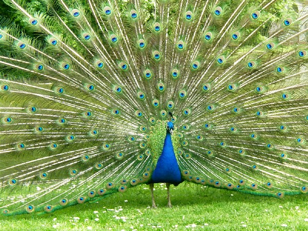
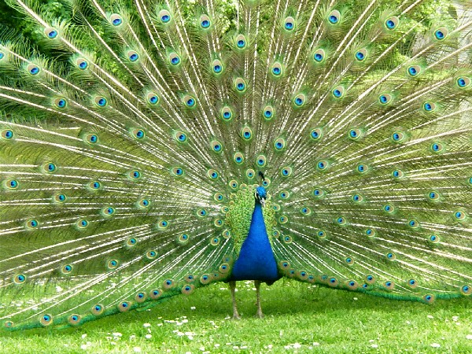

- border radius, border image
- reflection
- text shadows, box shadows
- text stokes, text fills
- background clip, multiple backgrounds
- HSL colors, RGBA colors, opacity
- linear and radial gradients
- word wrap, overflow using ellipsis
- multiple columns
- flexible box model
- web fonts
- media queries
- new selectors
- counter increments
- grid columns, grid rows
- transforms
- transitions
- animations

CSS Next
3D. Transforms. Transitions. Animations.
Neelesh Bodas
Software Engineer, Google.
CSS3
what's new?
Definitions
Transformation
Changing the position and/or shape of an element - by translating, scaling, rotating and/or skewing with respect to certain points or axes.
Transition
The process of changing the state of an element - over a period of time, under the effect of a specified conversion function and delay.
Animation
One or more transitions - repeated one or more times, either in same or different orders.
Transforms
translate, rotate, scale, skew
-webkit-transform: translateX(0px); -webkit-transform: translateY(0px); -webkit-transform: rotateX(0deg); -webkit-transform: rotateY(0deg); -webkit-transform: rotateZ(0deg); -webkit-transform: scaleX(1); -webkit-transform: scaleY(1); -webkit-transform: skewX(0deg); -webkit-transform: skewY(0deg); -webkit-backface-visibility:visible;hidden visible reset
HTML
Transforms
Demo: Rainbow Spiral
Number of figures:
Angle of rotation:
Angle of rotation:
Transforms
transform origin
div {
width: 150px;
height: 150px;
-webkit-transform: rotateZ(-60deg);
-webkit-transform-origin: 75px 75px;
}
 


Transforms
rotate3d
div {
rotate3d(1, 1, 1, 60deg);// v = 1i + 1j + 1k
}
CSS3
Transitions
Demo: Lights Out !
Transforms
Theory: perspectives
- Perspective: Representation of a 3D object on a 2D surface as seen by the eye.
- Perspective ≠Projection: Projection is the representation of a 3D object on a 2D surface.
- CSS3 Support:
- perspective: Number of pixels a 3D element is placed away from the eye.
- perspective-origin: X and Y displacement of the eye in the plane of view.
- Two rules of thumb
- Higher the value of perspective, the transformed object appears more identical to its untransformed shape.
- Higher the value of perspective, smaller is the object size.
- Three types of perspectives: Based on number of vanishing points in the image.
one-point
two-point
three-point
Transforms
perspective, perspective-origin
#outerDiv {
-webkit-perspective: 1000;
-webkit-perspective-origin: 600px 100px;
}
#innerDiv {
-webkit-transform: rotateX(45deg);
}
HTML
Transforms
Demo: Rotating Cube
CSS3 Rocks!

opaque
Transforms
Rotating Cube Explained (1 of 2)
<div id="cubeOuter" class="cubeOuter">
<div class="cubeFace cubeFaceA"> 1 </div>
<!-- other five faces go here -->
</div>
.cubeFaceA { -webkit-transform: rotateY(0deg); }
.cubeFaceB { -webkit-transform: rotateY(-90deg); }
.cubeFaceC { -webkit-transform: rotateY(180deg); }
.cubeFaceD { -webkit-transform: rotateY(90deg); }
.cubeFaceE { -webkit-transform: rotateX(90deg); }
.cubeFaceF { -webkit-transform: rotateX(-90deg); }
1
2
3
4
5
6
Transforms
Rotating Cube Explained (2 of 2)
.cubeOuter {
-webkit-perspective: 1200;
-webkit-perspective-origin: 300px 200px;
-webkit-transition: -webkit-transform 2s;
}
.cubeFaceA { -webkit-transform: rotateY(0deg) translateZ(150px); }
.cubeFaceB { -webkit-transform: rotateY(-90deg) translateZ(150px); }
.cubeFaceC { -webkit-transform: rotateY(180deg) translateZ(150px); }
.cubeFaceD { -webkit-transform: rotateY(90deg) translateZ(150px); }
.cubeFaceE { -webkit-transform: rotateX(90deg) translateZ(150px); }
.cubeFaceF { -webkit-transform: rotateY(-90deg) translateZ(150px); }
1
2
3
4
5
6
Transitions
transition
div {
-webkit-transition:
left 3s cubic-bezier(0.1, 1, 1, 0.5),
-webkit-transform 3s linear,
border-radius 3s ease-out 3s;
}
div:active {
left: 800px;
-webkit-transform: rotate(180deg);
border-radius: 100px;
}
CSS3
enable transition
bezier builder
page flip effect
Animations
keyframes
@-webkit-keyframes move {
from { left: 0px; }
50% { width: 550px; left: 0px; background-color: #6699FF;}
100% { width: 50px; left: 500px; }
}
div {
-webkit-animation-name: move;
-webkit-animation-duration: 2s;
-webkit-animation-timing-function: cubic-bezier(0.9, 0.1, 0.1, 0.9);
-webkit-animation-delay: 4s;
-webkit-animation-iteration-count: infinite;
-webkit-animation-direction: alternate;
-webkit-animation-fill-mode: forwards;
}
walking man
Animations
demo: infinite zoom
Adding 3D effects
common techniques
- Perspective
- Graphics
- Shadows
- Focus
- Color Shading
- Opacity
- Size and Placement
- Reflection
Putting it all together
Demo: Rotating chrome box
1
2
3
4
Some more demos
One thing to remember
vender prefix


-ms-
-moz-
-webkit-
-webkit-
-o-